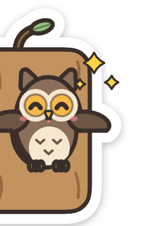
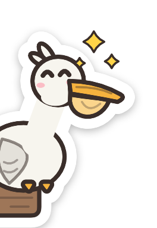
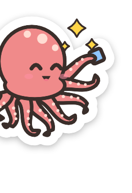
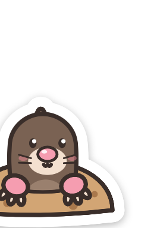

Deixe com o gato. Pegue depois.
O PawShelf é uma prateleira para o seu Mac. Um personagem pequeno espia da borda da tela e guarda arquivos, pastas, imagens, links e textos enquanto você alterna entre apps.
Baixar na Mac App StorePara macOS 14 ou posterior, em Macs com Apple silicon e Intel.
Como funciona

Solte na aba
Arraste qualquer coisa até o personagem na borda da tela. Longe da borda? Sacuda o cursor enquanto arrasta e a prateleira abre bem ao lado.

Continue o que estava fazendo
Troque de app, de Space ou de janela em tela cheia. A aba continua na borda, e seus itens continuam lá depois de reiniciar.

Arraste para fora
Solte os itens no Finder, no Mail, em um chat ou em um formulário de upload. Selecione vários para arrastá-los juntos.
Escolha quem guarda suas coisas
Doze personagens, cada um com seu jeito de guardar as coisas. Alguns hábitos fazem um trabalho de verdade: as bochechas do hamster mostram o quanto a prateleira está cheia, o esquilo avisa sobre itens esquecidos e o gelo do pinguim derrete os itens de que você não precisa mais.
-


Gato Caixinha
Esconde suas coisas em uma caixa de papelão
-


Hamster Bochechudo
As bochechas incham conforme a prateleira enche
-


Esquilo Bolota
Lembra das bolotas esquecidas e sugere uma arrumação
-


Pinguim Geladeira
Guarda as coisas no gelo até derreterem
-


Coruja Noturna
Bem acordada à noite, sonolenta de dia
-


Pega Brilhante
Coleciona links e imagens brilhantes
-


Cachorro Buscador
Traz suas coisas de volta quando você precisa
-


Canguru de Bolso
Guarda as coisas em segurança na bolsa
-


Pelicano
Abre o bicão para pegar o que você soltar
-


Polvo Oito Braços
Segura uma coisa em cada braço
-


Toupeira Escavadeira
Guarda as coisas na sua toca
-


Tartaruga Cascuda
Protege as coisas debaixo do casco
Passe o ponteiro sobre um adesivo para dizer oi.
Tudo o que uma prateleira deve fazer
Histórico da Área de Transferência
Suas últimas 50 cópias ficam na prateleira. Cópias que gerenciadores de senhas marcam como privadas nunca são registradas.
Coletar arquivos novos
Escolha uma pasta como Capturas de Tela ou Downloads, e os arquivos novos aparecem sozinhos na prateleira.
Buscar dentro de imagens
Encontre uma captura de tela pelas palavras que ela contém. O texto é reconhecido no seu Mac.
Títulos e ícones de links
Os links mostram o título e o ícone da página, não só um endereço.
Removidos Recentemente
Removeu algo sem querer? Recupere pelo menu ⋯ da prateleira.
Visualizar e compartilhar
Pressione a barra de espaço para a Visualização Rápida ou envie itens por AirDrop e Mensagens.
Coleções
Agrupe itens relacionados em coleções e mostre uma de cada vez.
Em todos os Spaces
A aba acompanha você em todos os Spaces e fica por cima de apps em tela cheia, na borda esquerda ou direita.
Pronto para o VoiceOver
Cada botão e item da prateleira tem um rótulo do VoiceOver.
Nada para permitir nos Ajustes do Sistema
O PawShelf não pede permissão de Acessibilidade nem de Gravação de Tela. Ele roda no App Sandbox e só abre o que você entrega a ele. O que você coloca na prateleira fica no seu Mac.